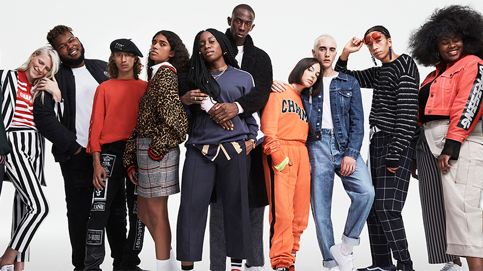

El streetwear se ha convertido en una tendencia de moda que ha tomado por asalto a la industria de la moda en los últimos años. Si bien ha existido durante décadas, ha ganado popularidad en todo el mundo, especialmente entre los jóvenes. Pero, ¿Qué es el streetwear? ¿Por qué se ha vuelto tan popular? En este artículo, te lo contamos todo.
El streetwear, también conocido como moda urbana, es un estilo de ropa que se originó en las calles de las ciudades de Nueva York, Los Ángeles y Tokio y se ha convertido en una forma de expresión para la cultura juvenil. Se caracteriza por ser una mezcla de ropa deportiva, ropa casual y elementos de la cultura urbana, como el graffiti y la música hip-hop. El streetwear es conocido por su estilo relajado, cómodo y con una actitud desenfadada.
Entonces, ¿por qué el streetwear se ha vuelto tan popular en los últimos años? Una de las razones es que se ha convertido en una forma de expresión de la identidad y la individualidad. Los jóvenes y adultos jóvenes encuentran en el streetwear una forma de mostrar su personalidad y su estilo único. Además, el streetwear ha sido adoptado por celebridades, influencers y figuras de la cultura pop, lo que ha impulsado su popularidad y lo ha convertido en una tendencia global.
La moda streetwear también se ha vuelto popular porque es cómoda y versátil. Las prendas de streetwear suelen ser holgadas, con telas suaves y cómodas, lo que las hace ideales para el uso diario. Además, muchas marcas de streetwear ofrecen una amplia variedad de prendas, desde hoodies con capucha hasta tennis deportivos, lo que permite a los amantes del streetwear crear su propio estilo personalizado.
El streetwear también ha capturado la atención de la industria de la moda de lujo. Muchas marcas de lujo han colaborado con marcas de streetwear para crear colecciones exclusivas, lo que ha elevado la moda urbana a un nuevo nivel de reconocimiento y aceptación en la industria de la moda. Esto ha llevado a un aumento en la disponibilidad de prendas de streetwear en tiendas de lujo y en línea, lo que ha contribuido a su popularidad.
En resumen, el streetwear es un estilo de moda urbana que se ha vuelto tendencia en todo el mundo debido a su capacidad para expresar la identidad y la individualidad, su comodidad y versatilidad, y su aceptación en la industria de la moda de lujo.